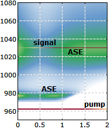
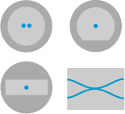
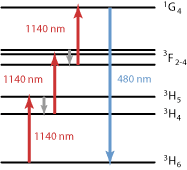

An Amazing Tool

This amazing tool is extremely helpful for the development of passive and active fiber devices.

Watch our quick video tour!
Single-mode and Multimode Fibers

Calculate mode properties such as
- amplitude distributions (near field and far field)
- effective mode area
- effective index
- group delay and chromatic dispersion
Also calculate fiber coupling efficiencies; simulate effects of bending, nonlinear self-focusing or gain guiding on beam propagation, higher-order soliton propagation, etc.
Arbitrary Index Profiles
A fiber's index profile may be more complicated than just a circle:

Here, we "printed" some letters, translated this into an index profile and initial optical field, propagated the light over some distance and plotted the output field – all automated with a little script code.
Fiber Couplers, Double-clad Fibers, Multicore Fibers, …

Simulate pump absorption in double-clad fibers, study beam propagation in fiber couplers, light propagation in tapered fibers, analyze the impact of bending, cross-saturation effects in amplifiers, leaky modes, etc.
Fiber Amplifiers

For example, calculate
- gain and saturation characteristics (for continuous or pulsed operation)
- energy transfers in erbium-ytterbium-doped amplifier fibers
- influence of quenching effects, amplified spontaneous emission etc.
in single amplifier stages or in multi-stage amplifier systems, with double-clad fibers, etc.
Fiber-optic Telecom Systems

For example,
- analyze dispersive and nonlinear signal distortions
- investigate the impact of amplifier noise
- optimize nonlinear management and the placement of amplifiers
Find out in detail what is going on in such a system!
Fiber Lasers

For example, analyze and optimize the
- power conversion efficiency
- wavelength tuning range
- Q switching dynamics
- femtosecond pulse generation with mode locking
for lasers based on double-clad fiber, with linear or ring resonator, etc.
Ultrafast Fiber Lasers and Amplifiers

For example, study
- pulse formation mechanisms
- impact of nonlinearities and chromatic dispersion
- parabolic pulse amplification
- feedback sensitivity
- supercontinuum generation
Apply any sequence of elements to your pulses!
… and even Bulk Devices

For example, study
- Q switching dynamics
- mode-locking behavior
- impact of nonlinearities and chromatic dispersion
- influence of a saturable absorber
- chirped-pulse amplification
- regenerative amplification
RP Fiber Power is an extremely versatile tool!
Mode Solver

For example, calculate
- amplitude and intensity profiles
- effective mode areas
- cut-off wavelengths
- propagation constants
- group velocities
- chromatic dispersion
All this is calculated with high efficiency!
Beam Propagation

Propagate optical field with arbitrary wavefronts through fibers.
These may be asymmetric, bent, tapered, exhibit random disturbances, etc.
See our demo video for numerical beam propagation.
Laser-active Ions

Work with the standard gain model, or define your own level scheme!
Can include different ions, energy transfers, upconversion and quenching effects, complicated pumping schemes, etc.
Multiple Pump and Signal Waves, ASE

Define multiple pump and signal waves and many ASE channels – each one with its own transverse intensity profile, loss coefficient etc.
The power calculations are highly efficient and reliable.
Simple Use and High Flexibility Combined
For simpler tasks, use convenient forms:

Script code is automatically generated and can then be modified by the user.
A powerful script language gives you an unparalleled flexibility!
High-quality Documentation and Competent Support
The carefully prepared comprehensive documentation includes a PDF manual and an interactive online help system.
Competent technical support is provided: the developer himself will help you and make sure that any problem is solved!
Our support is like included technical consulting.
Boost your competence, efficiency and creativity!
- Stop fishing in the dark! Develop a clear quantitative understanding of your devices.
- Explore the effects of possible design changes on your desk.
- That way, get most efficient in the lab.
- Find optimized solutions efficiently, minimizing time to market.
- Get new ideas by playing with your models.
Efficiency and success of
R & D are not a matter of chance.